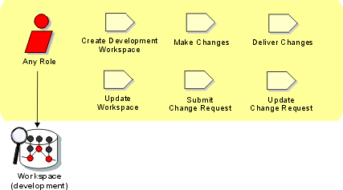

Role:
Any Role
Any role identified in the Rational Unified Process can, given
access privileges, 'check-in' and 'check-out' any product-related artifact for
maintenance in the configuration control system. Any role may also submit
change requests and make updates to the change requests for which they are the
owner.

Copyright
© 1987 - 2001 Rational Software Corporation
|  Roles and Activities >
Roles and Activities >
 Any Role
Any Role